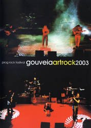

| Artist: | Various Artists |
| Title: | Gouveia Artrock 2003 |
| Label: | Portugal Progressivo |
| Length(s): | 80 minutes |
| Year(s) of release: | 2003 |
| Month of review: | [10/2007] |
| 1) | Quarante Jours Sur Le Sinai, Acte 1 | |
| 2) | 198 | |
| 3) | Derives | |
| 4) | Abandon |
La Maschera di Cera (32 minutes)
| 5) | Ai Confini Del Mondo | |
| 6) | Il Viaggio Nellóceano Capovolto, Part 1 | |
| 7) | Dal Caos |
La Maschera Di Cera was brought to life by Fabio Zuffanti in order to bring back the vintage sound of Italian seventies prog. The start of their offering on this DVD does not advocate that starting point. The flutey and freaky sound has more of a jazz feel. Not before long, though, the heavy synths roll out and we dó get that vintage sound. Still, the band mostly present material from their second disc, Il Grande Labirinto, which is far less heavy on the symphonic side as their debut was. The band's closer on this disc is a rather experimental, jazzy bit featuring Manuel Cardoso of Tantra.
As a bonus we get short interviews with both bands, but these are mostly on the level of "happy to be here", along with some soundcheck views. Then there's a six minute impressionary documentary on the festival itself. Nothing earth shattering here.
Of course it's hard to judge a band's performance at a festival based on just part of it. I would say, however, that what's offered on this disc does not convince me, not to the point I would have expected it too. The Nil offering contained some parts that were not fully there technically, whilst the Maschera footage falls short on the symphonic side. So, I'm left on the fence on this one: we get some nice offerings, but I can't feel satisfied.
www.gaudela.net/gar